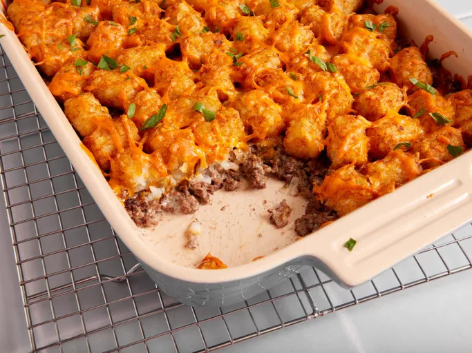

Tater Tot Casserole

Description
Quick and easy dinner everyone will love!
Five basic ingredients come together for a great dish!
Ingredients
- 1 pound ground beef
- 1 can of condensed cream of mushroom soup
- Pinch of Salt and pepper (garlic optional)
- 1 bag of tater tots
- 2 cups shredded cheese of choice
How to make
Step by step instructions
- preheat oven at 350 and put tater tots in to start cooking
- Brown ground beef in medium skillet
- Add can of cream of mushroom soup and browned ground beef to tater tots in the baking dish
- Bake at 350 for an additional 10-15 minutes or until tater tots are golden brown
- Top with cheese and let cool for 5 minutes